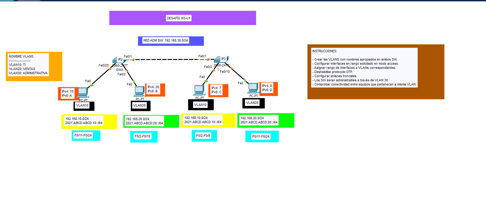

📡 Topologías de Red

Simulación de VLANs, HSRP y OSPF en routers Cisco con prácticas reales.
Elementos principales
- Configuración de VLANs y subinterfaces
- Protocolos de enrutamiento OSPFv2 y OSPFv3
- HSRP para redundancia en gateway
- Seguridad con ACLs
⬅ Volver al portafolio